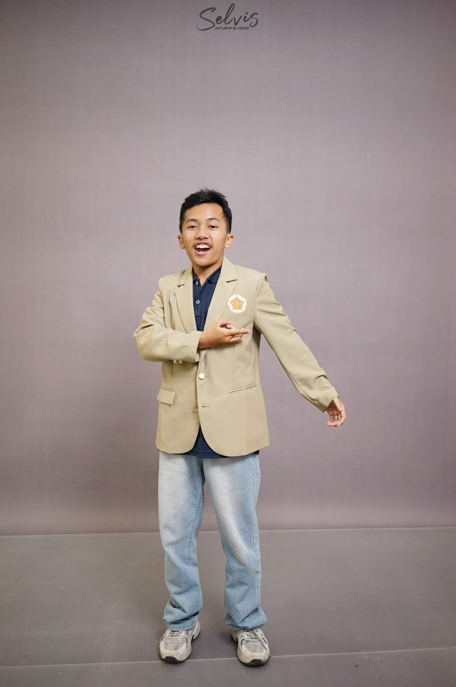

01
Universitas Gadjah Mada
Teknologi Rekayasa Elektro
Sekolah Vokasi. Mempelajari dasar-dasar teknik elektro, termasuk matematika, rangkaian listrik, elektronika, fisika, pengukuran listrik, dan pemrograman dasar.
Halo, saya
Saya merupakan mahasiswa Universitas Gadjah Mada yang sedang membangun fondasi pengetahuan di bidang teknik elektro, pengukuran listrik, rangkaian elektronika, dan pemrograman Python. Saya tertarik untuk terus belajar dan mempersiapkan diri untuk berkarier di industri energi, khususnya minyak dan gas.

Terus belajar, mengembangkan kemampuan, dan membangun fondasi untuk masa depan.
Saya adalah mahasiswa Universitas Gadjah Mada yang memiliki ketertarikan pada bidang teknik elektro. Saat ini saya sedang mempelajari dasar-dasar pengukuran listrik, analisis rangkaian, elektronika, dan pemrograman Python.
Saya ingin terus memperkuat pemahaman akademik, mengembangkan kemampuan komunikasi, dan memperluas wawasan melalui proses belajar serta pengalaman baru. Dalam jangka panjang, saya tertarik untuk membangun karier di perusahaan besar, khususnya industri minyak dan gas.
Pendidikan yang sedang saya jalani sebagai fondasi untuk mengembangkan pengetahuan dan keterampilan di bidang teknik elektro.
Sekolah Vokasi. Mempelajari dasar-dasar teknik elektro, termasuk matematika, rangkaian listrik, elektronika, fisika, pengukuran listrik, dan pemrograman dasar.
Pengetahuan dan keterampilan dasar yang sedang saya kembangkan melalui perkuliahan dan praktikum.
Mempelajari penggunaan instrumen pengukuran dan pembacaan besaran listrik dalam praktikum.
Membangun dasar pemrograman dan mempraktikkan penyelesaian masalah melalui kode sederhana.
Memahami konsep dasar rangkaian dan besaran listrik sebagai fondasi pembelajaran teknik elektro.
Pengalaman pembelajaran praktis yang membantu saya membangun fondasi teknik elektro dan pemrograman.
Mempelajari penggunaan instrumen pengukuran listrik dan penerapannya dalam pengujian rangkaian dasar.
Mempelajari dasar pemrograman Python melalui latihan dan penyelesaian masalah menggunakan Google Colab.
Terbuka untuk terhubung, bertukar wawasan, dan belajar lebih banyak tentang dunia teknik elektro.
Saya sedang mengembangkan pengetahuan dan keterampilan di bidang teknik elektro serta pemrograman. Silakan kunjungi profil LinkedIn saya atau hubungi melalui email.